buumisc(7)
buu刷题目记录(第7页)
buumisc(7)
buu第七页，取证什么的后面在一块学习一下，目前暂时跳过了
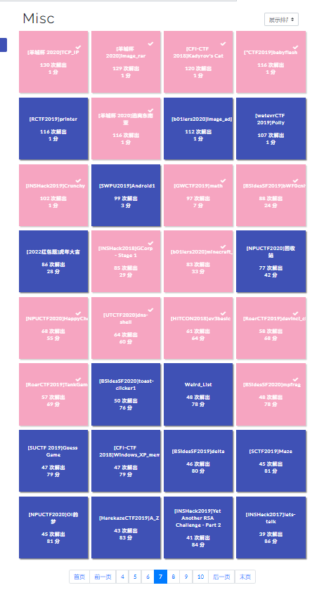
[羊城杯 2020]TCP_IP
得到一个流量包，但是发现每个IP信息都不一样，然后挨个提取出来
1 | tshark -r attachment.pcap -Y "tcp" -T fields -e ip.id >out.txt |
然后转换成ascii字符
1 | f = open(r'out.txt') |
通过base91解密，但是发现存在干扰导致异常，然后每次使用依次拼接的方式得到flag
1 | import base91 |
得到flag
1 | flag{wMt84iS06mCbbfuOfuVXCZ8MSsAFN1GA} |
[羊城杯 2020]image_rar
得到一个MP4文件，经过binwalk+foremost可以确认是一个zip文件，里面有大量图片，修改后缀名得到hint
1 | 压缩包密码（6位）：GWxxxx 后面可能会用到的哦 |
可以发现压缩包密码并不是指当前压缩包，直接解压得到一堆图片，发现65.jpg存在异常
查看65.jpg文件头，可以看到当前文件头是61726121跟52617221(rar)很相似，改成rar文件头和rar后缀名，打开需要密码
可以结合之前的hint和file 65.rar得到的结果，在kali下用工具rar2john 65.rar得到hash结果
1 | 65.rar:$rar5$16$a2dce3925af59efb2df9851dbfc24fb1$15$bb005ea8f91bf0356c8dddcfa41ac4cb$8$62293dc5e26e9e7f |
然后用hashcat.exe（https://hashcat.net/files/hashcat-6.1.1.7z）
1 | .\hashcat.exe -m 13000 -a 3 $rar5$16$a2dce3925af59efb2df9851dbfc24fb1$15$bb005ea8f91bf0356c8dddcfa41ac4cb$8$62293dc5e26e9e7f GW?a?a?a?a |
爆破得到密码GW5!3#，解压得到一个没有后缀名的文件，010打开是png文件头，修改后缀名后得到flag
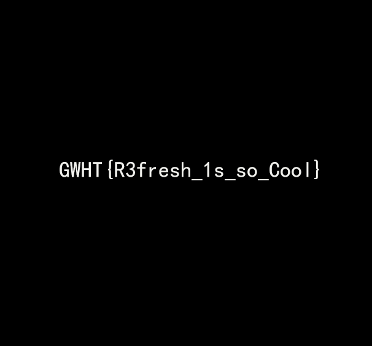
1 | GWHT{R3fresh_1s_so_Cool} |
[CFI-CTF 2018]Kadyrov’s Cat
得到一个图片和pdf，查看图片属性得到一个经纬度坐标用https://minigps.net/fc.html
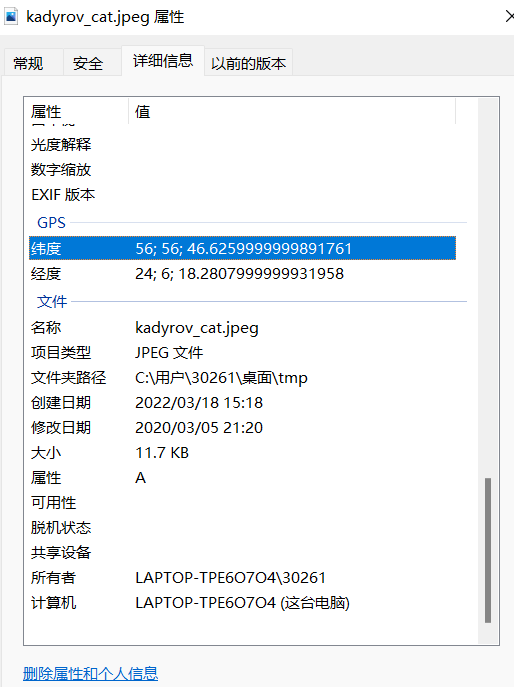
定位到city是Riga。
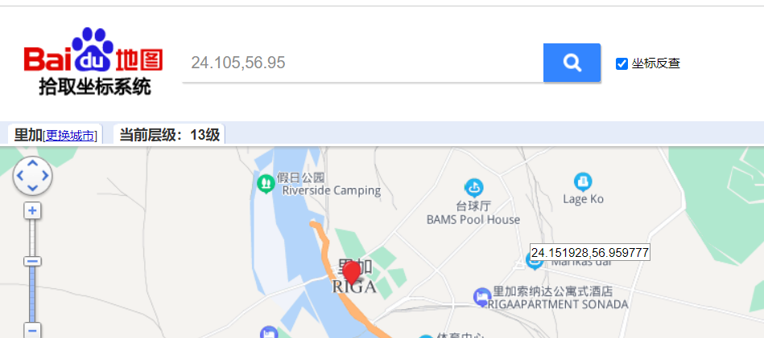
然后用npp++找到作者信息Kotik Kadyrov
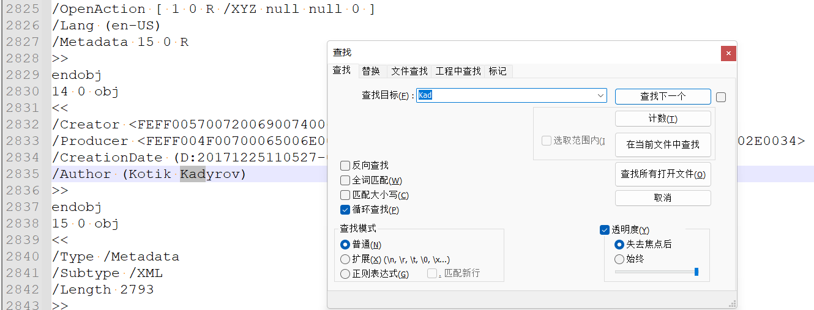
然后结合原题Flag format is : CFI{Firstname_Lastname_of_City}
1 | CFI{Kotik_Kadyrov_of_Riga} |
[*CTF2019]babyflash
得到swf文件，用工具https://github.com/jindrapetrik/jpexs-decompiler/releases打开得到一个音频和一堆图片
用Audacity查看音频文件得到&_the_rest}
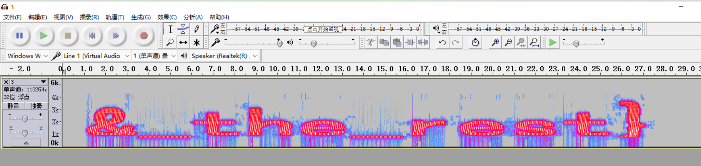
图片数量是441正好能够分成21*21所以猜测是21×21的二维码
1 | import os |
然后得到二维码，识别得到*ctf{half_flag_&
1 | *ctf{half_flag_&&_the_rest} |
[羊城杯 2020]逃离东南亚
得到三个压缩包，其中日记1需要修改图片的crc得到下面一个密码：wdnmd，猜测是日记二密码
使用silenteye分析wav文件得到日记3密码：This1sThe3rdZIPpwd
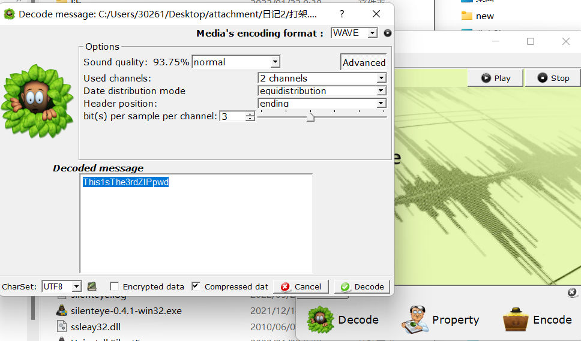
md写了不能明文交流，联想到tab和空格，但是几千个文件，挨个查看不现实，因此考虑写个脚本搜索，由于tab和空格编写的隐藏数据通常是连续的，同时要过滤到常见的双空格和双/t，因此考虑用 \t \t作为搜索字符：
1 | import os |
然后转换一下
1 | f_list = r'''source_code\elf\rtld.c |
得到结果
1 | 01010011010011110101001100100001001000000111000001101100011001010110000101110011011001010010000001101000011001010110110001110000001000000110110101100101001000000010110100111110001000000111001001110100011011000110010000101110011000110111100101101111011101010111001000100000011001100110110001100001011001110010000001101001011100110010000001101001011011100010000001101101011000010110110001101100011011110110001100101110011000110100011101010111010000110101010001000110011110110110001101101111011001000110010101011111011100110111010001100101011001110110000101101110011011110110011101110010011000010111000001101000011110010101111100110001011100110101111101100110011101010110111001101110011110010010000101111101 |
然后二进制转字符
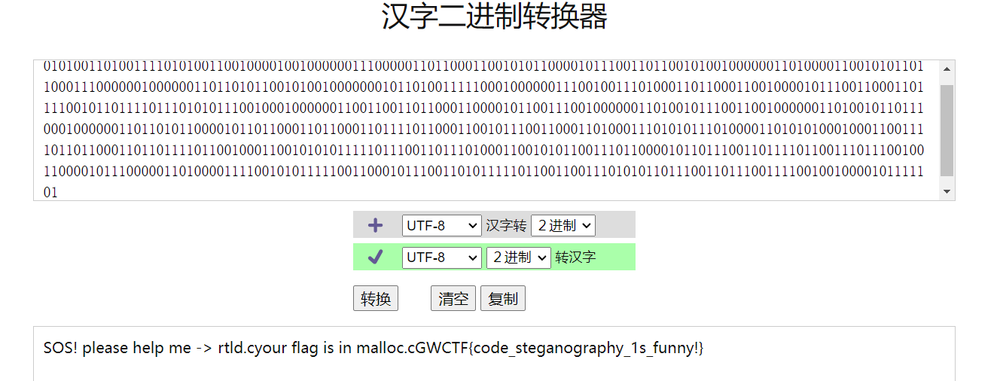
1 | GWCTF{code_steganography_1s_funny!} |
[INSHack2019]Crunchy
1 | {% raw %} |
但是直接运行失败，然后报错超过最大递归限度，需要修改一下本质是对斐波那契数的取模，利用皮萨诺周期即可解，可参考：https://blog.csdn.net/caozhk/article/details/53407845
1 | n = 17665922529512695488143524113273224470194093921285273353477875204196603230641896039854934719468650093602325707751568 |
1 | flag{41322239} |
[GWCTF2019]math
远程连上去可以看到，是一个计算公式，需要答对150题目，并且有很少的时间
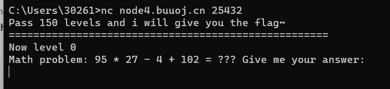
直接写个EXP自动答题
1 | from pwn import * |
1 | flag{3e0966bd-64fc-41da-a75f-ebd651663184} |
[BSidesSF2019]bWF0cnlvc2hrYQ==
用010打开附件能够看到Face的内容是，下面的内容通过base64解码得到二维码识别为：h4ck_the_plan3t
1 | iVBORw0KGgoAAAANSUhEUgAAADAAAAAwAQMAAABtzGvEAAAABlBMVEX///8AAABVwtN+AAAACXBIWXMAAAsTAAALEwEAmpwYAAAAB3RJTUUH4wMBBAIZ8ky8pwAAAJRJREFUGFdlzbEJwzAQBdAzB04TkhE0gzqrkVYRZIEMIHAgawiyyqWJS69g8AhqXIT8FPERI1evfAQ0GaAV4ZCFK4bS5HH+49OWNu4Q7pKwArjf4DJARG0kUlAWY3PFcsUcoLjyMhSV5ShsJ8XhMHuuIAr3z0UBfP/MijD1FspQOiNmh6cTbUjNTRF2j/NUAfg4vle+pY6V5XCWRiUAAAAASUVORK5CYII= |
可以看到有几个文件私钥文件Matry_Oshka.key和加密文件hack.pgp，但是通过base64加密了，可以用下面这个软件解密
1 | # #base64写成文件 |
PGPTool来解密，PGPTool: https://pgptool.github.io/
首先导入Key ring->Import PGP Key->导入Matry_Oshka.key
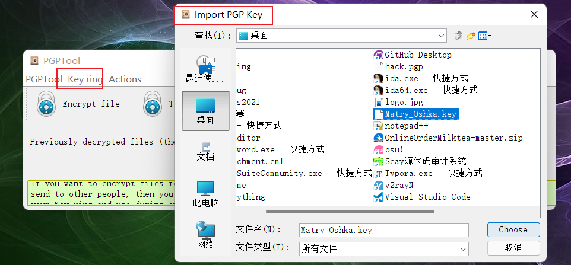
导入之后选择import即可看到弹窗看到具体信息，然后选择Decrypt file中选择hack.pgp
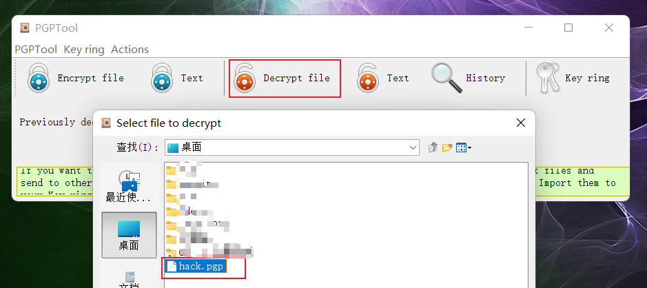
这里需要输入前面得到的密码：h4ck_the_plan3t得到一个zip，并且需要找到路径
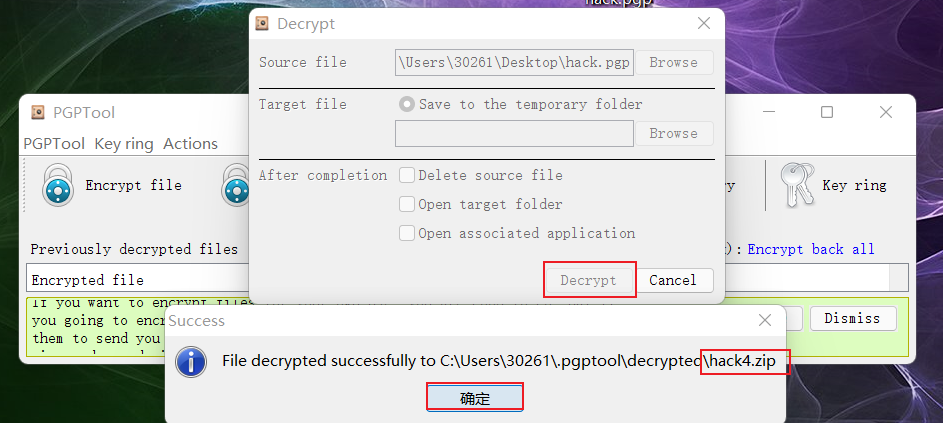
打开zip，里面是一个file.bin文件没有加密直接解压，得到一个用foremost识别的结果是lzip，然后删除文件头LZIP前面的内容另存为
然后用lzip -d file.bin解压得到file.bin.out，file一下是一个pdf文件，然后得到一个png图片
https://upload.wikimedia.org/wikipedia/en/2/27/Bliss_%28Windows_XP%29.png原图进行sub操作得到一个二维码
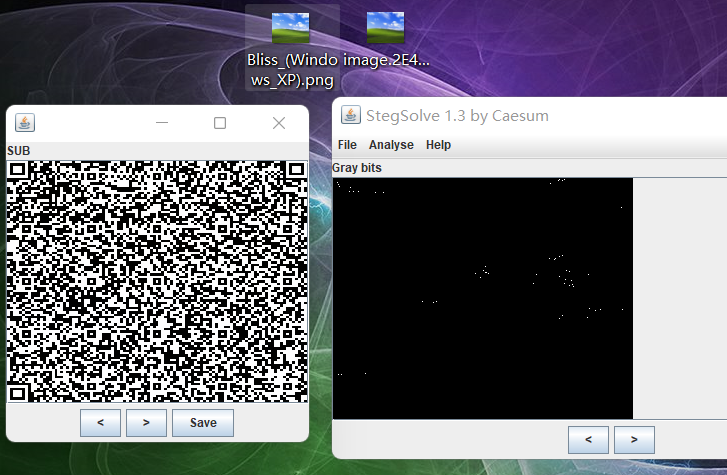
识别得到，看起来是base64但是通过有一个减号，改成+号，然后解密得到一个7z压缩包
1 | /Td6WFoAAATm1rRGAgAhARwAAAAQz1jM4ELCAORdABhgwwZfNTLh1bKR4pwkkcJw0DSEZd2BcWATAJkrMgnKT8nBgYQaCPtrzORiOeUVq7DDoe9feCLt9PG-MT9ZCLwmtpdfvW0n17pie8v0h7RS4dO/yb7JHn7sFqYYnDWZere/6BI3AiyraCtQ6qZmYZnHemfLVXmCXHan5fN6IiJL7uJdoJBZC3Rb1hiH1MdlFQ/1uOwaoglBdswAGo99HbOhsSFS5gGqo6WQ2dzK3E7NcYP2YIQxS9BGibr4Qulc6e5CaCHAZ4pAhfLVTYoN5R7l/cWvU3mLOSPUkELK6StPUBd0AABBU17Cf970JQABgALDhQEApzo4PbHEZ/sCAAAAAARZWg== |
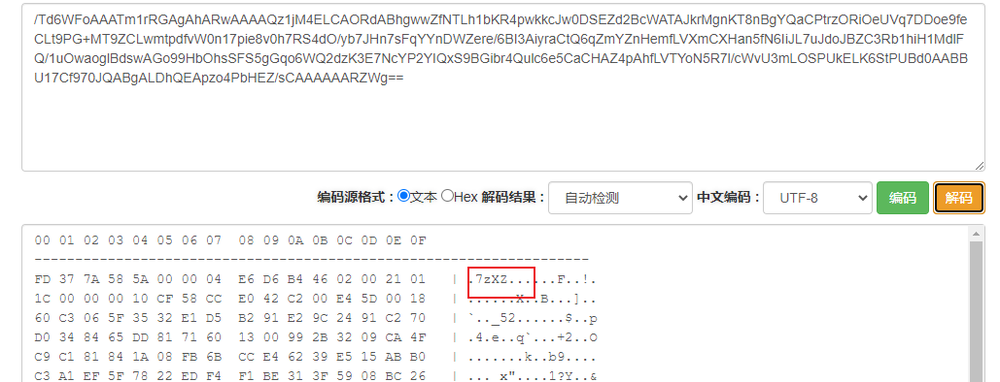
然后用前面那个脚本转换一下得到7z压缩包，然后得到大量01组成的文件，CyberChef
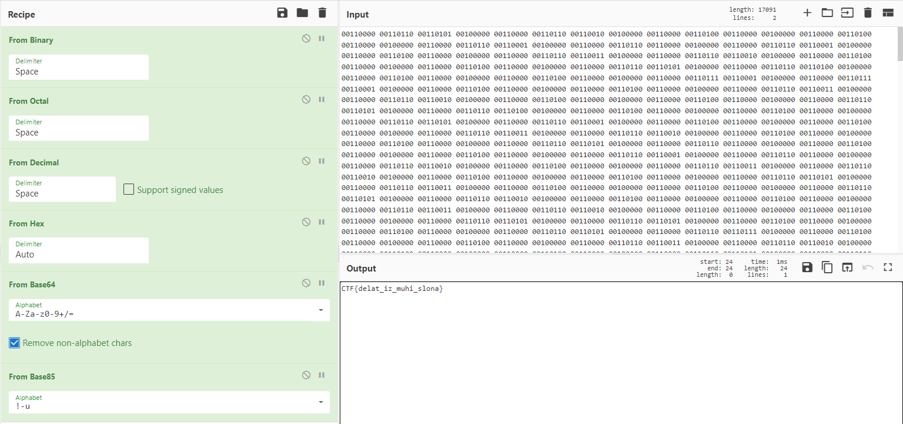
1 | CTF{delat_iz_muhi_slona} |
[INSHack2018]GCorp - Stage 1
得到一个流量包，追踪TCP流在最后得到
1 | SU5TQXtjMTgwN2EwYjZkNzcxMzI3NGQ3YmYzYzY0Nzc1NjJhYzQ3NTcwZTQ1MmY3N2I3ZDIwMmI4MWUxNDkxNzJkNmE3fQ== |
经过base64解密得flag
1 | INSA{c1807a0b6d7713274d7bf3c6477562ac47570e452f77b7d202b81e149172d6a7} |
[b01lers2020]minecraft_purdue
玩游戏找flag，https://www.bilibili.com/video/av843171515/参考大佬的WP
1 | flag{M1NE} |
[NPUCTF2020]HappyCheckInVerification
得到一个破损的二维码跟mp4视频，通过手动的方式修复二维码
1 | flag{this_is_not_flag} |
得到假的flag，中间汉字用与佛论禅解密得到：说了这不是佛拉格，你还来转？给爷爪巴
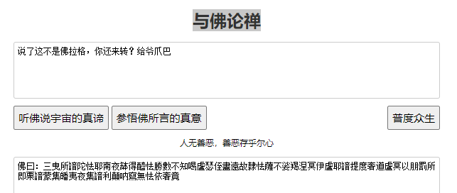
然后通过||分隔符得到base16解密内容
1 | E68BBFE4BD9BE68B89E6A0BCE79A84E5A7BFE58ABFE59CA8E69C80E5908E32333333 |
1 | 254333254242254338254342254231254338254345254432254238254643254236254145254239254441254437254234254232254131254236254245253244253244254343254438254330254341254336254435 |
还有后面一部分的use base64，看大哥们的WP得到一个SSTV，SSTV.mp3手机上用Robot36识别出来一张图，得到flag
1 | flag{miSc_ChecK_In_Ver16ied} |
[UTCTF2020]dns-shell
根据题目名称，找到流量包中的dns流量进去查看到有base64加密的东西
1 | bHMgLWxhCg== |
解密之后
1 | ls -la |
然后看WP才知道环境关了https://meowmeowxw.gitlab.io/ctf/utctf-2020-do-not-stop/
1 | $ dig -t TXT -q dns.google.com @35.225.16.21 |
我们得到了一个新地址：3.88.57.227，让我们尝试使用dig新地址：
1 | $ dig -t TXT -q $(echo "cat flag.txt" | base64) @3.88.57.227 |
附上大哥的脚本
1 | #!/usr/bin/env python3 |
得到的dXRmbGFneyRhbDF5X3MzTDFTX3NFNF9kTiR9用base64解密得到flag
1 | utflag{$al1y_s3L1S_sE4_dN$} |
[RoarCTF2019]davinci_cipher
得到一个流量包和flag.txt类容发现规律，U+1F643这种样子是表情
1 | U+1F643U+1F4B5U+1F33FU+1F3A4U+1F6AAU+1F30FU+1F40EU+1F94BU+1F6ABU+1F606U+1F383U+1F993U+2709U+1F33FU+1F4C2U+2603U+1F449U+1F6E9U+2705U+1F385U+2328U+1F30FU+1F6E9U+1F6A8U+1F923U+1F4A7U+1F383U+1F34DU+1F601U+2139U+1F4C2U+1F6ABU+1F463U+1F600U+1F463U+1F643U+1F3A4U+2328U+1F601U+1F923U+1F3A4U+1F579U+1F451U+1F6AAU+1F374U+1F579U+1F607U+1F374U+1F40EU+2705U+2709U+1F30FU+23E9U+1F40DU+1F6A8U+2600U+1F607U+1F3F9U+1F441U+1F463U+2709U+1F30AU+1F6A8U+2716 |
用网站https://r12a.github.io/app-conversion/解密得到猜测可能是emoji解密
1 | 🙃💵🌿🎤🚪🌏🐎🥋🚫😆🎃🦓✉🌿📂☃👉🛩✅🎅⌨🌏🛩🚨🤣💧🎃🍍😁ℹ📂🚫👣😀👣🙃🎤⌨😁🤣🎤🕹👑🚪🍴🕹😇🍴🐎✅✉🌏⏩🐍🚨☀😇🏹👁👣✉🌊🚨✖ |
在流量包中发现USB流量过滤并保存下来
全部筛选条件 (usb.src == “1.9.1”) && (frame.len == 54) 并导出筛选后的分组test.pcapng
用命令提取所有的USB流量（建议使用普通用户操作tshark）可以看到一些信息
1 | tshark -r 'test.pcapng' -T fields -e usb.capdata > test.txt |
查看test.txt中的信息
1 | 10:40:2a:46:00:1e:3c:00:00:00:00:00:00:00:00:00:3f:00:00:00:00:00:00:00:00:00:00 |
然后根据数位板的流量规律得到一下脚本
1 | # coding:utf-8 |
生成图片，得到： MONA_LISA_IS_A_MAN
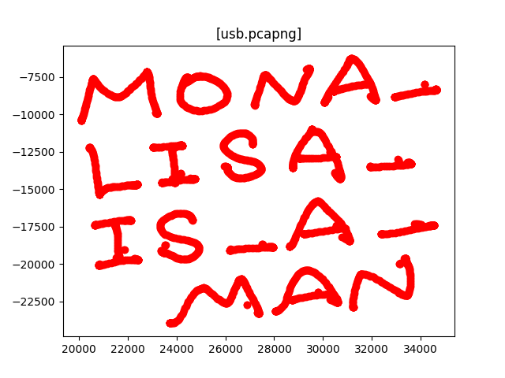
结合前面的emoji和此处的key在https://aghorler.github.io/emoji-aes/能进行解密得到flag
1 | RoarCTF{wm-m0de3n_dav1chi} |
[RoarCTF2019]TankGame
直接string得到一个假的flag：RoarCTF{wm-f1@g_1$_N0t_h3r3}
dnsp打开找到，关键代码在MapManager类中的WinGame方法
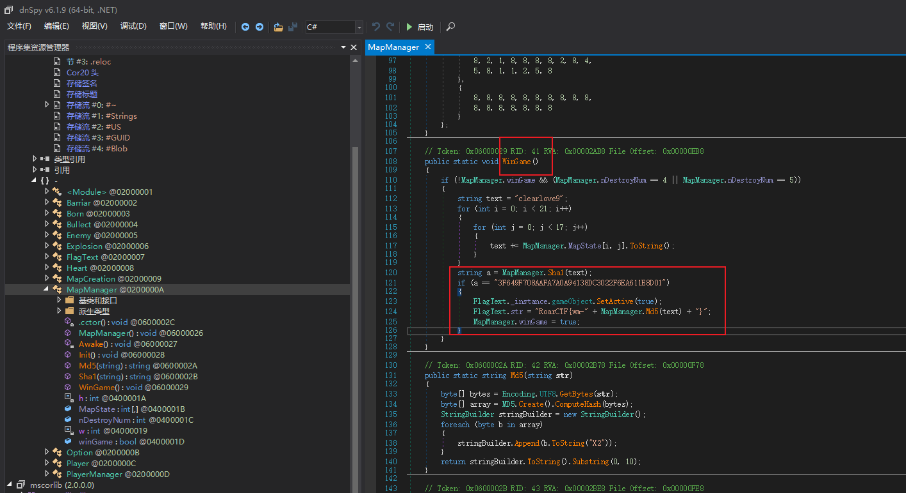
看大佬的wp，逆向爆破一下python2的脚本
1 | import hashlib |
1 | RoarCTF{wm-805CEC3545} |
[HITCON2018]ev3basic
得到一个流量包和一个图片，图片上是乐高EV3其中屏幕上显示hitcon{}直接搜特殊字符{得到如下结果
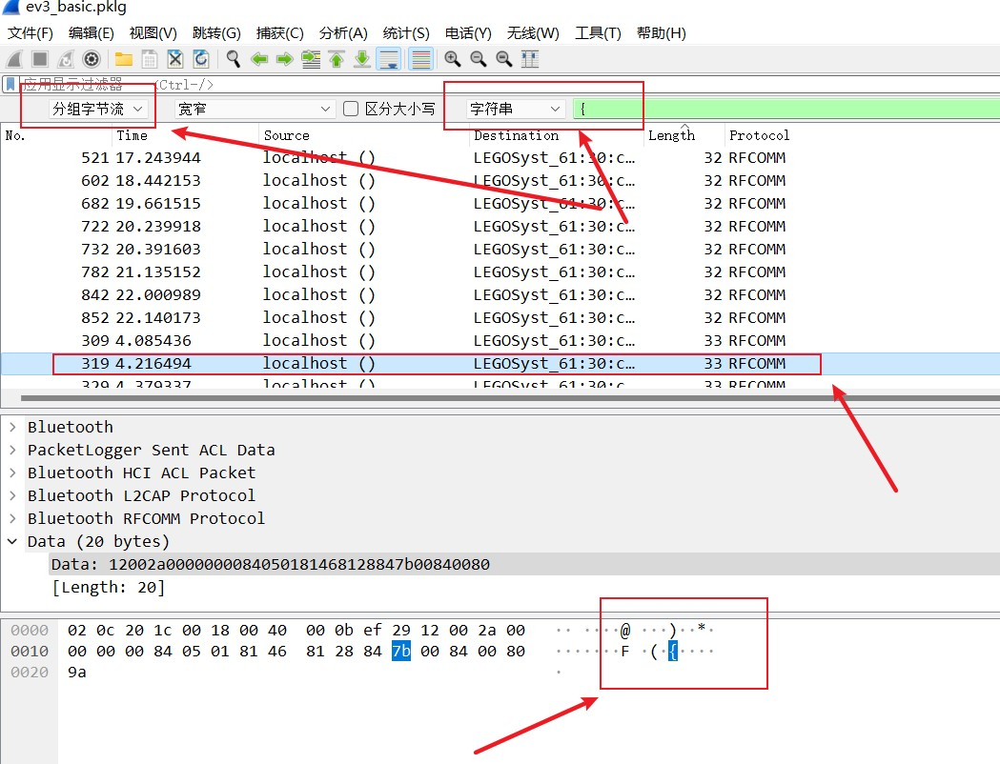
再搜特殊字符}得到如下结果
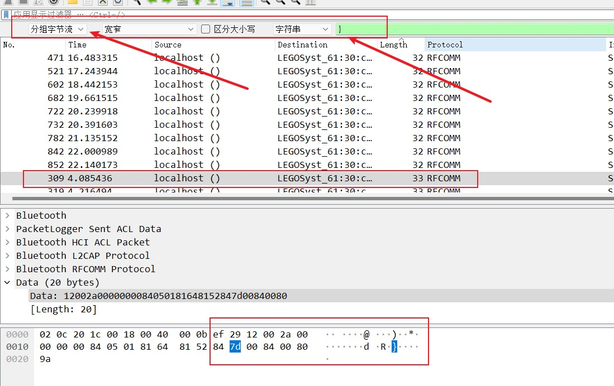
可以猜测flag位置大概在source是localhost()和destination是LEGOSyst_61:30:c1 (EV3)直接，但是长度可能会在28到34之间，然后对比{前面发现flag前缀不是hitcon于是就有可能flag顺序不对：hit_o_pcndo1}{1ncdomiekrfauai5nt_rnimmcmti_wreeavderom0_tn
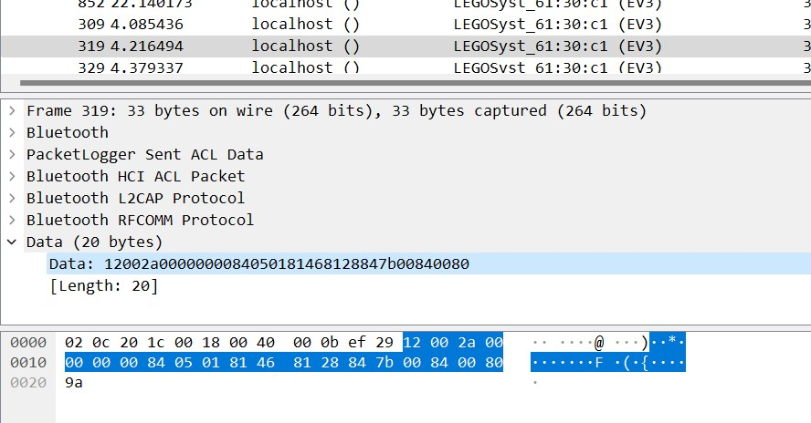
可以猜测从后往前数的第一个84，数据的倒数第五位为显示的字符，即图中7b，
字符显示在不同的行，因此数据需要指示行的位置，通过分析发现倒数第二个“84”前的数据表示行号，即图中00，
除了行以外，还要关注字符在这一行中的顺序，因为数据长度不同，从分析的结果看，表示方法也不同，总体上看是81前面的数字，即五角形标记出来的信息。12位为2个81之间的数字，11位为81前的数字。13位为81前，82后的数字。见下图
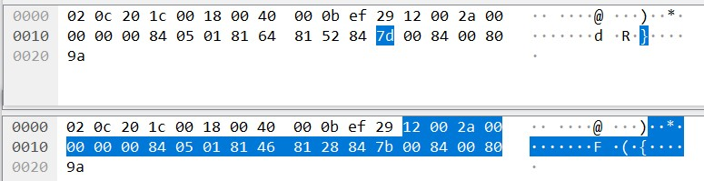
1 | hitcon{m1nd5t0rm_communication_and_firmware_developer_kit} |
[BSidesSF2020]mpfrag
首先把后缀名修改成mp4，然后用KMPlayer播放，拿到字符串
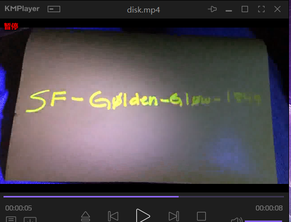
1 | SF-G0lden-Gl0w-1849 |
然后用file分析得到是ext2格式的文件系统镜像，尝试挂载：
1 | # file disk.bin |
报错，给出了可能的错误原因，其中包括 /dev/loop0的超级块损坏。文件系统中8193块存储有超级块的备份数据，用dd命令来提取：
1 | # dd if=disk.bin of=8193.bin bs=1024 skip=8193 count=1 |
然后把提取出来的备份块放回disk.bin的超级块位置：
1 | # dd if=8193.bin of=disk.bin bs=1024 conv=notrunc seek=1 |
然后再次挂载disk.bin，成功。
1 | # mount disk.bin ./mnt |
然后去mnt文件夹查看到一堆图片和一个cloud.zip，用之前的字符串解压得到flag
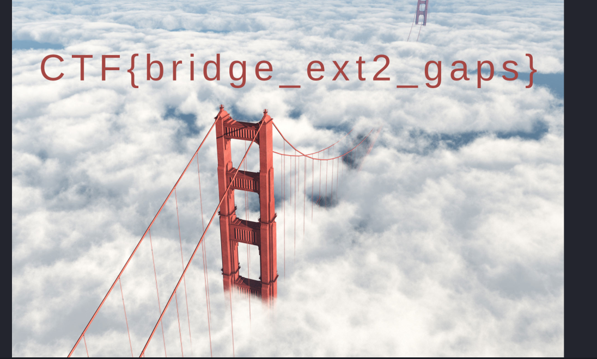
1 | CTF{bridge_ext2_gaps} |
 微信
微信- 支付宝